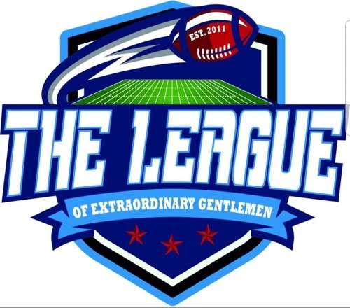
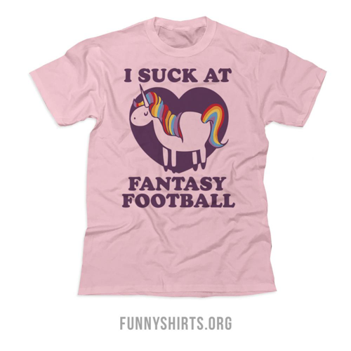

The Governing Document

The League of Extraordinary Gentlemen est une ligue de Fantasy Football composée de la façon suivante :
12 équipes (3 divisions) - Half PPR - Dynasty - 5pts/ TD pass - 3pts/Return TD.
La composition maximale de l’alignement de chaque équipe est le suivant
(maximum de 30 entrées) :
QB 1 · RB 1 · RB 2 · WR 1 · WR 2 · WR 3 · TE 1 · FLEX 1 (QB/RB/WR/TE) · FLEX 2 (RB/WR/TE) · BENCH 1 · BENCH 2 · BENCH 3 · BENCH 4 · BENCH 5 · BENCH 6 · BENCH 7 · BENCH 8 · BENCH 9 · BENCH 10 · BENCH 11 · BENCH 12 · BENCH 13 · BENCH 14 · *BENCH 15* · *BENCH 16* · *BENCH 17* · *BENCH 18* · IR SPOT 1 · IR SPOT 2 · IR SPOT 3 · TAXI 1 · TAXI 2 · TAXI 3 · TAXI 4
* Spots présents uniquement durant le off-season
Les divisions sont construites afin d’être le plus égales possible entre elles. Leur compositions pourront être révisées au moment opportun, si nécessaire.
Les divisions sont les suivantes :
Division Nord:
Sébastien Malo
Olivier Dutrisac
Alexandre Doucet
Samuel Tassé
Division Centrale :
Xavier Bernet
Guillaume Doucet
Alexandre Raymond
Marc-André Giguère
Division Sud:
Sébastien Gélinas
David Légaré
Rémi Giguère
Ludovic Harris Gauthier
1. Le calendrier régulier sera composé de la manière suivante :
Deux parties contre chacune des trois équipes adverses intra-division, en début et fin de saison.
Huit parties restantes contre les huit autres équipes.
Donc, un total de 14 parties.
2. Le calendrier des séries sera composé de la manière suivante :
Les trois gagnants de leur division respective feront les séries. Les 2 meilleurs gagnants de divisions auront un 《bye》 pour la première semaine des séries.
Les 4 autres places seront déterminées selon la formule «Wild Cards》. Le 3e gagnant de division est assuré de participer aux séries. Toutefois, il n’est pas assuré du 3e seed.
En cas d’égalité des victoires au classement, le nombre de points-pour constitue le bris d’égalité.
3. Le tournoi des séries éliminatoires s’effectuera ainsi :
Semaine 15 : Les deux meilleurs gagnants de division auront droit à un bye-week. Les positions 3 et 4 affronteront respectivement les positions 6 et 5.
En cas d’égalité des victoires au classement, le nombre de points-pour constitue le bris d’égalité.
Semaine 16 : La première place affrontera l’équipe restante avec la moins bonne fiche en saison régulière. La deuxième place affrontera l’équipe restante.
Semaine 17 : Finale du Shiva.
Vos administrateurs sont disponibles pour toute question ou toute assistance.
Si vous ne pouvez contacter l’un ou l’autre, et que votre problème est une urgence (par exemple, si vous avez besoin d’un changement dans votre alignement et que vous ne pouvez l’effectuer en temps opportun), utilisez le groupe Messenger de The League pour faire votre demande. Cela nous permettra de vérifier l’heure de votre demande et de faire les changements de façon rétroactive, si nécessaire.
League Commissioners
Xavier Bernet
438-883-5711
xavier.bernet.cnmtl@ssss.gouv.qc.ca
David Légaré
514-622-6765
Trésorier
Nous vous demandons de remettre vos frais d’entrée pour le pool au Trésorier. Si jamais vous remportez un prix, il est de votre responsabilité de contacter le trésorier pour qu’il puisse vous remettre votre prix, selon vos coordonnées et votre méthode de paiement désirée.
Sébastien Malo
438-869-8567
Les frais d’entrée pour participer au pool de The League sont les suivants :
Participation au pool : 130$ par équipe.
Un montant de 30$ est remboursé à la fin de la saison si vous avez eu moins de 2 infractions concernant votre alignement (voir règlement alignement plus bas).
La structure de paiement sera la suivante :
| $400.00 | Gagnant du Shiva |
|---|---|
| $150.00 | Finaliste du Shiva |
| $50.00 | Gagnant du match de 3ième place |
| $60.00 | Chaque Gagnant de division remporte 20$ |
| $140.00 | En saison régulière, chaque semaine le highest scorer remporte 10$. |
| $240.00 | Chaque participant aux séries recevra 40$. |
| $50.00 | Champion de la saison régulière déterminé par Fiche, PTS pour, Tie-Breaker |
| $50.00 | Celui avec le plus de points pour au terme de la saison régulière. |
| $20.00 | Toilet Bowl Winner : Gagnant du Tournoi de consolation. |
| $40.00 | Meilleur QB,RB, WR et TE après la finale du shiva (10$ chacun) |
Toutefois, le gagnant du Shiva aura la responsabilité d’aller faire graver le trophée au nom du gagnant de l’année suivante avant de le lui remettre, et devra en assumer les frais. Il remettra ensuite le Shiva au nouveau champion lors du draft.
Notre système de waivers sera un Free Agent Acquisition Budget (FAAB) :
In-season (Week 1 au Superbowl) : Budget de 1000$. Ouvre les mardis. Joueur demeure deux jours minimum sur le waiver après avoir été «drop».
Entre le Shiva et le Superbowl : Waivers fermés.
Off-season (Superbowl jusqu’à week 1) : Budget de 1000$. Ouvre une fois/semaine, le dimanche matin.
Ouverture du FAAB de «In-season» (1000$) week 1.
Maximum de 1000$ de FAAB. Il n’est pas possible de collecter plus de 1000$ de FAAB via une transaction, et ce même si l’application sleeper le permet.
Les choix disponibles pour chaque équipe sont les choix suivants :
Année en cours (2026) : Ronde 1-2-3-4-5;
Année subséquente (2027) : Ronde 1-2-3-4
Année suivante (2028) : Ronde 1-2-3-4
Le repêchage sera sous la forme linéaire (et non en serpentin), afin de favoriser les équipes plus faibles.
L’ordre des 6 premiers choix (1.01 à 1.06) sera déterminé ainsi:
La pire équipe au chapitre des MAX PF (Points-Pour Maximum) aura automatiquement droit au 1er choix (1.01), et ainsi de suite dans l’ordre jusqu’au 6e choix. Le MAX PF est déterminé en fonction du meilleur alignement possible, pour l’ensemble de la saison régulière seulement, et calculé automatiquement par Sleeper.
Les 6 dernières équipes s’affrontent toujours dans le cadre du Consolidation Bracket (semaine 15 à 17, selon la même formule que les séries éliminatoires), afin de déterminer l’identité du Sacko et du gagnant du Toilet Bowl.
Les choix 7 à 12 (1.07 à 1.12) seront déterminés selon la méthode suivante :
Le gagnant du tournoi pour la 5e place obtiendra la position 1.07. Le perdant obtiendra la position 1.08.
Le gagnant du tournoi pour la 3e place obtiendra la position 1.09. Le perdant obtiendra la position 1.10.
Le gagnant du Shiva obtiendra la position 1.12. Le perdant obtiendra la position 1.11.
Le repêchage des recrues sera composé de 4 rondes de 12 équipes, pour un total de 48 joueurs.
Ordre de repêchage - Rookie draft 2026 :
Alexandre Doucet
Guillaume Doucet
David Légaré
Rémi Giguère
Marc-André-Giguère
Ludovic Harris-Gauthier
Alexandre Raymond
Samuel Tassé
Olivier Dutrisac
Sebastien Malo
Xavier Bernet
Sébastien Gélinas
1. Il y a 4 Taxi spots
2. Les joueurs acceptés sur les taxis spots seront les joueurs recrues ou de 2e année seulement.
3. Un joueur qui sort du taxi squad pour être promu sur le bench ou le starting lineup ne pourra plus retourner sur le taxi squad avant le prochain off-season (s’il est toujours éligible à y figurer).
4. Un joueur pourra rester sur le taxi squad au maximum jusqu'à la fin de sa 2e saison dans la NFL avant de devoir être mis sur le bench, tradé ou encore relâché sur les waivers.
The League fait confiance à ses joueurs et évitera le plus possible de s’immiscer dans les échanges. Si deux propriétaires s’entendent sur un échange, il sera présumé que les deux sont de bonne foi et que l’échange est juste.
Toutefois, le Commissionner ou le Co-Commissionner pourront utiliser leur droit de véto pour annuler un échange, si celui-ci est à sa face même empreint d’abus ou de collusion.
La date limite des transactions est à la fin de la 13e semaine.
Les transactions pourront recommencer dès le lendemain du Shiva.
Si une équipe laisse un espace vide sur son alignement de départ, pour cause de bye-week, oublie, bug informatique, blessure subite (OUT), etc., le Commissionner devra combler cet espace avec un joueur sur le banc de l’équipe, en prenant en compte le joueur disponible (n’ayant pas joué encore) ayant la meilleure projection de points pour cette semaine selon Sleeper. Le joueur de remplacement devra pouvoir être placé au même endroit (ou «spot») que le joueur inactif, sans autre modification d’alignement. Si nécessaire, il sera possible de combler ce vide avec un joueur disponible sur le waiver, toujours selon la règle de la meilleure projection disponible.
La seule exception est la suivante : si jamais une équipe décide volontairement de laisser un ou plusieurs espace(s) vide(s) sur son alignement de départ, elle doit le déclarer en temps opportun au Commissioner ou au Co-Commissioner.
À noter que l’alignement modifié emporte ensuite les mêmes effets que si l’équipe avait initialement «start» le joueur de remplacement. Ainsi, le résultat du match, les points pour, et autres effets sur les bourses, seront appliqués sans égard à l’alignement initial de l’équipe. Aucun recalcul ne sera nécessaire en aucun temps.
En playoffs, ce règlement n’est pas applicable. L’équipe ayant un alignement incomplet en playoffs en subira les conséquences. Aucune modification ne sera effectuée.
Chaque alignement de départ laissé incomplet, sauf si le tout est fait volontairement, entraînera la pénalité suivante :
1ère infraction : Aucune pénalité
2e infraction : 30$ de dépôt est perdu.
3e infraction : 4th round pick
4e infraction : 3rd round pick
5e infraction : 2nd round pick
6e infraction : 1st round pick
Puisque 10 GMs ont voté pour la transition vers le Superflex en 2026, nous aurons besoin de faire une transition.
Comment la transition se fera-t-elle?
À partir de 2026, notre alignement sera composé de la manière suivante :
QB
RB
RB
WR
WR
WR
TE
Superflex (QB/RB/WR/TE)
Flex (RB/WR/TE)
Il sera donc avantageux de ''starter'' 2 QBs par semaine.
Par souci de parité tous les QBs de la ligue deviendront disponibles.
1. Chaque équipe protège un QB gratuitement.
2. Possibilité de protéger un 2e QB. Si tel est le cas, tu dois payer la compensation d'un 1st rounder au draft 2026 pour le QB en question.
Si ton choix n'est pas un choix top 6, tu dois aussi payé un 2nd rounder afin de pouvoir protéger un second QB.
3. 2 QB protégés maximum (même si t'as 8 1st rounders)
4. Tout le reste des QB sont annexés au rookie draft 2026 et deviennent donc disponibles dans le draft.
5. Une ronde de plus au draft 2026 sera accordée (5 rondes au total).
6. La liste des QBs protégés devra être dévoilée 10 jours après le NFL Draft.
7. Vous pouvez quand même échanger vos choix 2026, mais faites attention, ceux-ci ont beaucoup plus de valeur qu'un autre rookie draft standard.
8. Pas de picks, pas de protection, aussi simple que ça.
*Nouveauté 2025*
Chaque année, il y aura une ronde de Devy draft la même journée que notre rookie draft.
Les paramètres sont les suivants :
1 joueur chaque seulement
Doit être considéré comme QB, RB, WR ou TE (ATH ne sont pas éligibles)
Le joueur appartient au DG à partir de sa sélection.
La liste utilisée est celle d’ESPN 300.
Le top 24 de chaque année est protégé.
Les joueurs ne sont pas échangeables avant d’apparaître sur le roster (ils apparaîtront sur le roster uniquement après notre rookie draft l’année de repêchage du joueur en question)
Les choix au repêchage ne sont pas échangeables. Il n’est donc pas possible de “trade up" ou “trade down”.
Le rang de sélection est le même que pour notre rookie draft.
Enfin, l’équipe qui finira dernière au classement final (semaine 17) verra son propriétaire subir un châtiment proportionnel à sa médiocrité.
Lors de la journée de repêchage de l’année suivante et tout au long de celle-ci, il devra signer ET porter le Sacko T-Shirt :

Mais ce n’est pas tout : À tour de rôle, chacun des 11 autres propriétaires auront l’occasion de faire tourner la Wheel of Water et de lancer un verre d’eau sur le Sacko pendant qu’il porte son T-Shirt.
Le Sacko devra ensuite faire son repêchage en entier avec le chandail, trempé dans la honte.
Shiva kamini Soma kandarkram
Shiva kamini Soma kandarkram HEY !